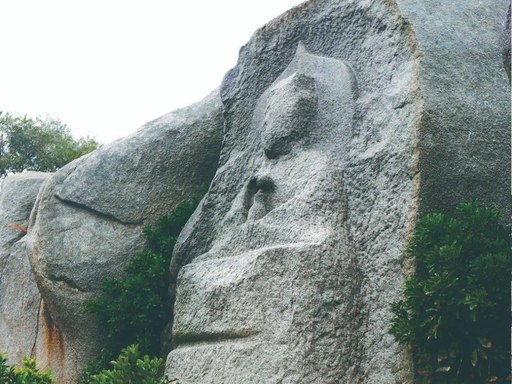
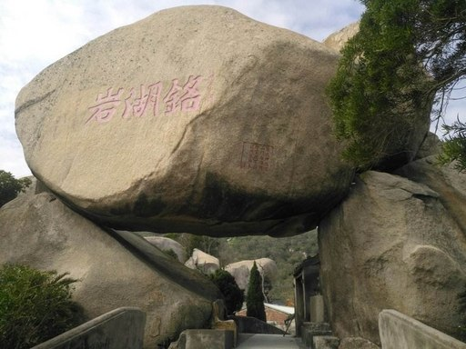
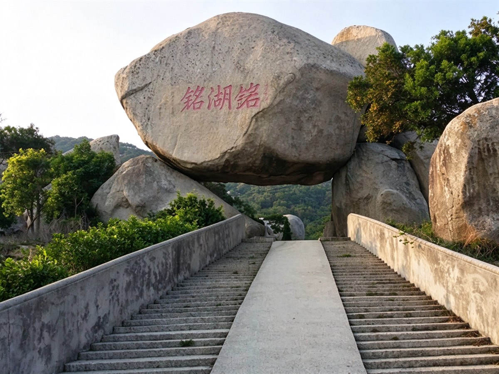

铭湖岩
前詹镇湖畔奇石与摩崖石刻景观
景点介绍
铭湖岩是前詹镇浑然天成的自然奇观，巨岩巍然屹立湖畔，岩壁留有古人摩崖石刻，湖光岩影相映，尽显沧海奇观。
特色看点
奇石胜景、摩崖石刻、湖光山色、海岸远眺。
游览建议
清晨或黄昏光影尤佳，适合摄影与户外徒步，建议游玩 1-2 小时。
铭湖岩 ·
奇 石 胜 景 · 湖 光 岩 影
铭湖岩是前詹镇一处浑然天成的自然奇观。一块巨大的岩石巍然屹立在湖畔，历经千万年的风雨雕琢，形成了独特的岩层纹理和造型。岩壁上依稀可见古人留下的摩崖石刻，因而得名“铭湖”——岩石铭记着湖水的千年相伴，岁月在这里留下了不可磨灭的印记。
 岩洞古寺
岩洞古寺
摩崖石刻
石门
石阶